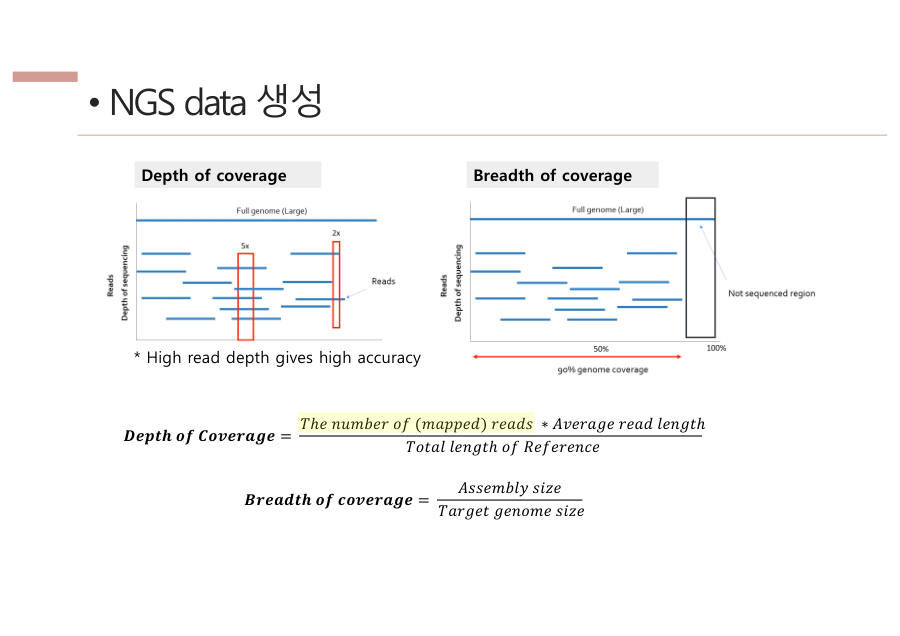

← 보드5장 Depth · 어디를 읽을까 · 3/8
왜 depth가 높아야 할까 — 투표 비유
비유
depth는 "투표에 참여한 사람 수"예요. 100명(100x)에게 물었는데 1명만 "T"라고 했다면, 그 1명이 잘못 본 거예요. 99명이 같은 말을 했으니까요.
그런데 2명(2x)에게 물었는데 1명은 A, 1명은 T라고 하면 어느 쪽이 맞는지 알 수 없어요. 판단 불가예요.
정리하면 depth가 높을수록 변이 판정이 정확해요. 조각 하나가 틀려도 나머지 조각들이 바로잡아 주기 때문이에요.
반대로 depth를 너무 낮게 잡으면 어떤 자리는 20번, 어떤 자리는 0번처럼 들쭉날쭉해져요. 0번인 자리가 생기면 coverage도 떨어져요. 그래서 연구자들은 "depth 100x, coverage 95%를 원한다"처럼 목표를 정하고 시퀀싱을 맡겨요. 다만 많이 읽을수록 돈이 더 들어요.

시험엔 이렇게 써요
Depth가 높을수록 한 read의 에러를 다른 read들이 보완해 진짜 변이와 시퀀싱 에러를 구분할 수 있다. 예를 들어 100x에서 하나만 다르면 에러로 걸러 내지만, 2x에서 하나가 다르면 판단할 수 없다. Depth가 너무 낮으면 안 읽힌 영역이 생겨 coverage도 떨어진다.
잠깐 확인 — 어떤 자리를 2번만 읽었더니 A 하나, T 하나였어요. 왜 변이라고 말할 수 없을까요?
2명 중 1명씩 다른 말을 하면 누가 맞는지 알 수 없어서 "진짜 변이"인지 "기계 실수"인지 가릴 수 없기 때문이에요. depth가 낮아서 생기는 문제예요.